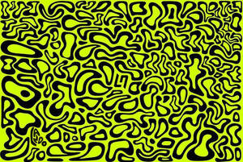

Trade Mark Journal No.2025/051 19 December 2025
UK00004308662 10 December 2025 (25,28,32)

- Class 25
- Clothing; footwear; headwear; parts, fittings and accessories for all the aforesaid goods.
- Class 28
- Games, toys and playthings; video game apparatus; gymnastic and sporting articles; decorations for Christmas trees; Christmas stockings; Christmas crackers; toy snow globes; paper party hats; party balloons; party poppers; puppets; toy mobiles; stuffed toys; teddy bears; novelty toys for parties; toys for pets; toy cars and vehicles; model cars and vehicles; remote-controlled toy vehicles; controllers for toys; toy racing sets; miniature helmets (playthings); toy helmets; toy figurines; dolls; playing cards; trading cards for games; board games; fitness articles and equipment; bags, cases and carriers for sporting, motor racing, fitness and gymnastic equipment, adapted/shaped to carry such equipment; boxing gloves; boomerangs; fishing tackle; ice skates; paintball guns; punching bags; water wings; inflatable games for swimming pools; playing balls; balls for games; counters [discs] for games; darts; dice; cups for dice; dominoes; fidget toys; flying discs [toys]; soap bubbles [toys]; spinning tops; toy pistols; toy putty; toy robots; jigsaw puzzles; kaleidoscopes; kites; marbles for games; play tents; masks [playthings]; carnival masks; apparatus for games; handheld computer games; electronic games; arcade games; computer game apparatus; video game consoles; controllers for games consoles; steering wheel shaped game controllers for driving games; computer game joysticks; gaming keyboards; gaming keypads; computer games equipment; tv game apparatus; apparatus for electronic games adapted for use with an external display screen or monitor; racing car games; coin feed amusement apparatus; parts, fittings and accessories for all the aforesaid goods.
- Class 32
- Beers; non-alcoholic beverages; mineral and aerated waters; fruit beverages and fruit juices; syrups and other preparations for making non-alcoholic beverages; soda water and sparkling water; isotonic drinks; protein drinks; energy drinks; sports drinks; soft drinks; carbonated soft drinks; soft drinks enhanced with vitamins, minerals, nutrients, amino acids and/or herbs; powders for making soft drinks.
Four Forward Management Limited
Representative: Beck Greener LLP